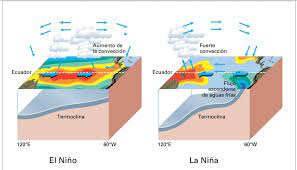
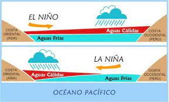

First slide label
Some representative placeholder content for the first slide.
Second slide label
Some representative placeholder content for the second slide.
Third slide label
Some representative placeholder content for the third slide.

Third slide label
Some representative placeholder content for the third slide.
¿en que condiciones se produce este fenomeno?
29 De Febrero 2024 Por: josue campos
Cuando las temperaturas de la superficie del mar superan el promedio por medio grado Celsius o más, se puede formar El Niño. Cuando las temperaturas están por debajo del promedio, se puede formar La Niña.
las aguas costeras se calentaban con frecuencia sobre todo en torno a Navidad, es decir, con la llegada del Niño Dios, por eso bautizaron el fenómeno así. Y cuando hubo que nombrar al fenómeno contrario a El Niño, se debía buscar un término opuesto, por eso se pensó en La Niña o El Viejo
La aparición de las redes revolucionó el modo de comprender la informática y abrió un nuevo campo dentro de esta disciplina para atender las necesidades de mejoría, seguridad y operatividad de la comunicación informática.
¿cuando fue la ultima vez que se presento este fenomeno?
Este fenómeno natural es la fluctuación más poderosa en el sistema climático en cualquier parte de la Tierra. La última vez que se formó El Niño fue en 2016 y sus efectos se dejaron sentir en todo el mundo
Este fenómeno natural es la fluctuación más poderosa en el sistema climático en cualquier parte de la Tierra. La última vez que se formó El Niño fue en 2016 y sus efectos se dejaron sentir en todo el mundo.
Los enrutadores son dispositivos físicos o virtuales que facilitan las comunicaciones entre diferentes redes. Los enrutadores analizan la información para determinar la mejor manera de que los datos lleguen a su destino final. Los conmutadores conectan dispositivos y administran la comunicación de nodo a nodo dentro de una red, asegurando que los paquetes de información que viajan a través de la red lleguen a su destino final.
¿como se puede evitar este fenomeno?
Entre las recomendaciones que se dio a la ciudadanía constan: Evitar botar basura en el barrio. Botar la basura en los lugares y horas ya establecidos. Limpiar las alcantarillas antes que inicie la etapa invernal. Además, las familias pudieron conocer sobre los peligros del mal uso del Gas Licuado de Petróleo (GLP) y los daños que ha causado la explosión de los tanques de gas. Cuando falta poco más de un mes para finalizar el año, el personal de la SGR aprovechó para advertir a los visitantes sobre el riesgo de utilizar juegos pirotécnicos. Mientras los padres recibían las charlas, los niños disfrutaban de una ruleta, en la que aprendían sobre las multiamenazas y cómo actuar frente a ellas.
¿Cuales son los efectos posteriores al fenomeno?
Pueden provocar inundaciones, sequías, incendios forestales y otros fenómenos extremos en varios partes del mundo.El Niño puede traer lluvias o un invierno más seco en el sur de Estados Unidos y condiciones más cálidas en América del Sur, mientras que La Niña puede aportar huracanes en el Atlántico Norte y un clima más húmedo en Australia, por citar algunos ejemplos.La consecuencia de esto será que el planeta se enfrentará a olas de calor más intensas, estaciones cálidas prolongadas y tormentas más fuertes. Indonesia y Australia experimentarán probablemente un tiempo más caluroso y seco, lo que incrementará la posibilidad de que haya incendios forestales.